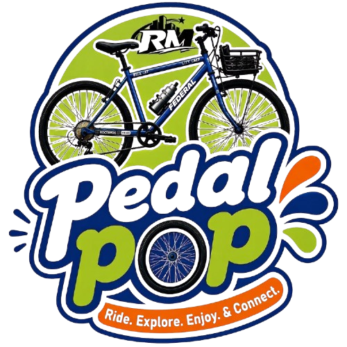

CITY BIKE
City Cruiser
Rp35.000 / 3 jam

PedalPOPSepeda yang pas untuk rute yang kamu mau. Pilih, pesan, lalu nikmati perjalananmu.
Temukan sepedamu
Rp35.000 / 3 jam

Rp30.000 / 3 jam

Rp50.000 / 3 jam
Urusan sewa dibuat simpel. Kamu tinggal fokus menikmati perjalanan.
Cari model yang cocok untuk rute dan gayamu.
Pilih lokasi dan durasi sewa yang kamu butuhkan.
Sepedamu siap. Saatnya bikin cerita baru.

Hubungi tim PedalPOP sebelum memulai perjalananmu.
+62 8xx-xxxx-xxxx
halo@pedalpop.example
Jl. Contoh No. 00, Jakarta